CARMEN+ · U.S. DOT-FUNDED RESEARCH
Safety-critical control and validation for autonomous vehicles
A continuous research effort built around Control Barrier Functions: from cooperative collision avoidance to real-vehicle safety filtering, uncertainty-aware intervention, and trajectory safety certification.
My research focuses on the safety-control and evaluation strand of the collaborative CARMEN+ project at Ohio State’s Center for Automotive Research / MSL. The broader project also investigates resilient vehicle localization in GPS-denied environments.
RESEARCH PROGRESSION
Five stages, one safety foundation
STAGE 01 · ITSC 2024
Cooperative safety control
Enforcing safety during vehicle coordination
Approach
Cooperative objectives can still produce conflicting vehicle paths at intersections and highway ramps. A CBF-based safety filter modifies nominal cooperative commands when collision-avoidance intervention is needed.
Validation and findings
MATLAB simulations evaluated intersection and merging interactions, comparing cooperative control with and without the safety filter.
FIGURES AND DEMONSTRATIONS
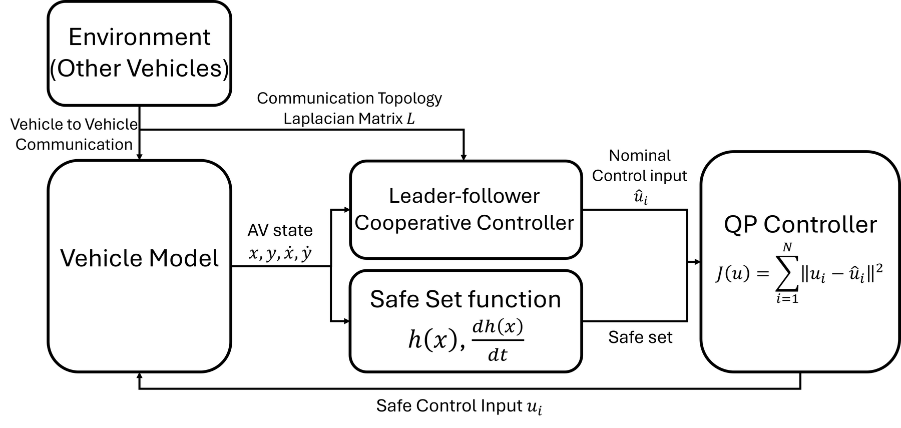
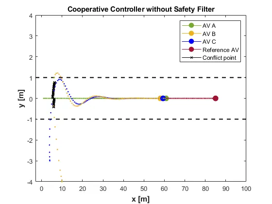
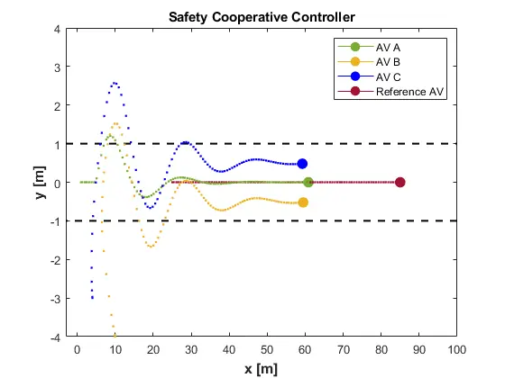
STAGE 02 · NOLCOS 2025
Real-vehicle implementation and evaluation
Bringing safety constraints into the control loop
Approach
Three architectures were compared: MPC with distance constraints, MPC with embedded CBF constraints, and MPC followed by an independent CBF-QP safety filter. The comparison examined how safety enforcement affects obstacle avoidance and nominal trajectory tracking.
Validation and findings
Collaborative full-scale vehicle experiments covered static obstacles, sudden pedestrian interaction, and overtaking a lead vehicle. The independent safety-filter architecture provided the foundation for subsequent uncertainty-aware control.
FIGURES AND DEMONSTRATIONS
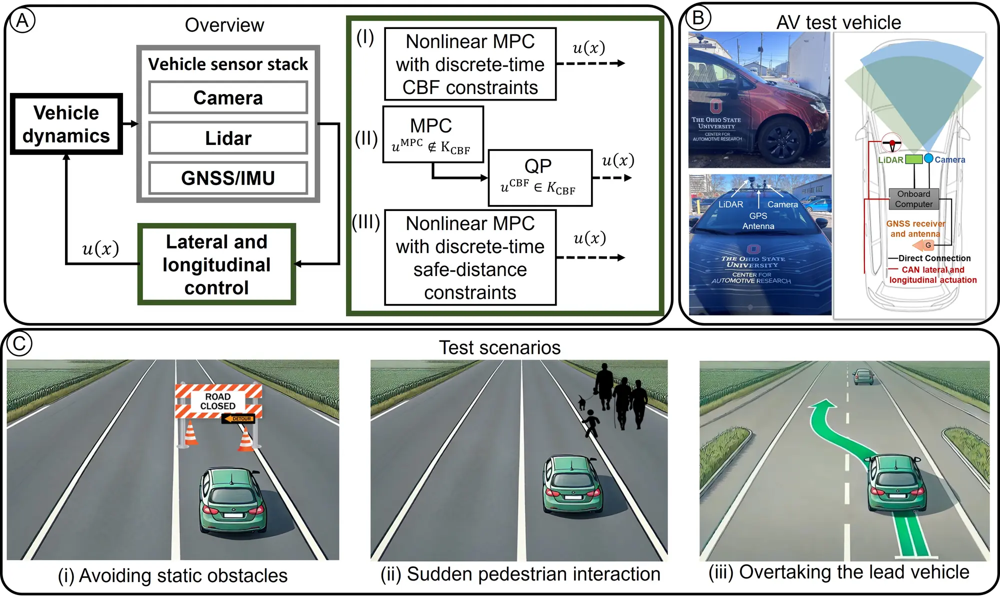
STAGE 03 · Control Engineering Practice 2026
Safety under sensing uncertainty
Accounting for uncertain obstacle and vehicle states
Approach
Multi-modal obstacle information is represented probabilistically and fused using a Wasserstein barycenter. Conditional Value-at-Risk (CVaR) incorporates unfavorable outcomes into the CBF safety filter while MPC retains nominal trajectory-following responsibility.
Validation and findings
Simulation and full-scale autonomous-vehicle experiments evaluated collision avoidance under sensing and localization uncertainty.
FIGURES AND DEMONSTRATIONS
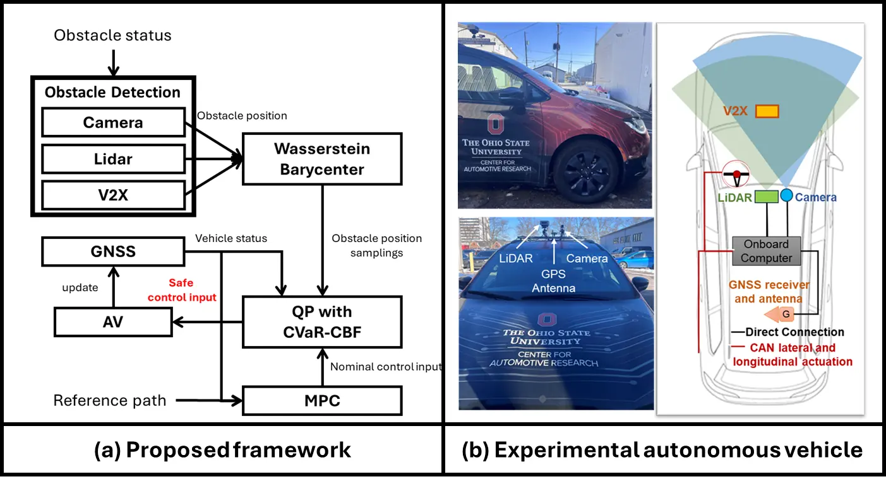
STAGE 04 · ACC 2026
Risk-budgeted control
Adapting intervention to safety conditions
Approach
A sliding-window monitor tracks degraded safety conditions and switches between a performance-oriented relaxed CBF and a more conservative CVaR-CBF. Feasibility-triggered and quality-triggered strategies address the trade-off between intervention and nominal driving performance.
Validation and findings
The study evaluated vehicle–pedestrian interactions under localization and obstacle-position uncertainty across 1,500 Monte Carlo trials.
FIGURES AND DEMONSTRATIONS
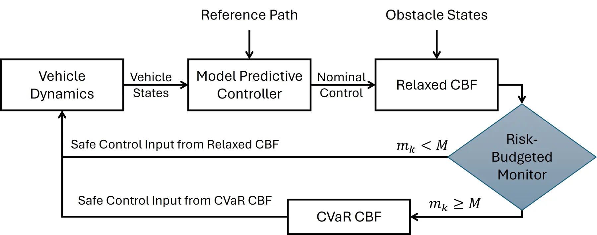
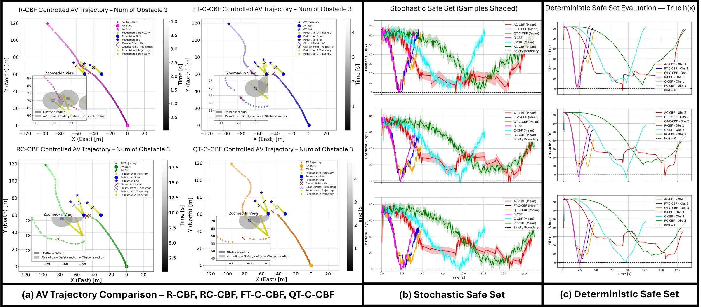
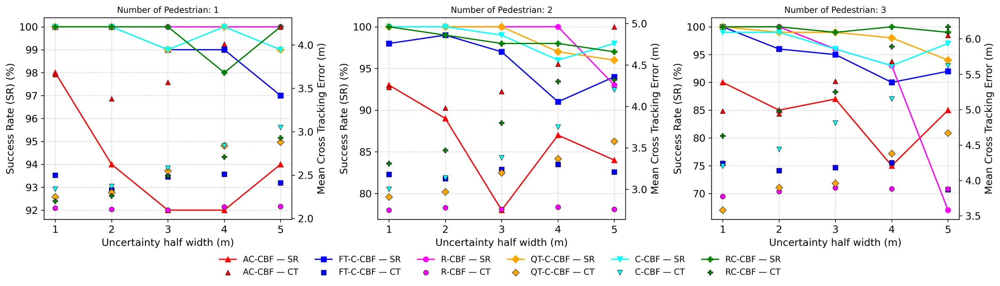
STAGE 05 · arXiv preprint 2026
Trajectory safety certification
Extending safety assurance to planner-generated trajectories
Approach
A planner-independent framework combines a barrier-function margin, lower-tail CVaR, and conformal calibration to produce lower certificates of realized safety clearance. It evaluates planner-generated trajectories before execution.
Validation and findings
On 150 held-out nuPlan sessions, coverage was 93.3% with the nominal statistic and 96.0–96.7% with sampled CVaR, against a 90% target. Nonnegative certificate availability increased from 68.7% to 87.3%. Coverage concerns statistical safety-clearance certification; it is not a collision-free driving rate.
FIGURES AND DEMONSTRATIONS
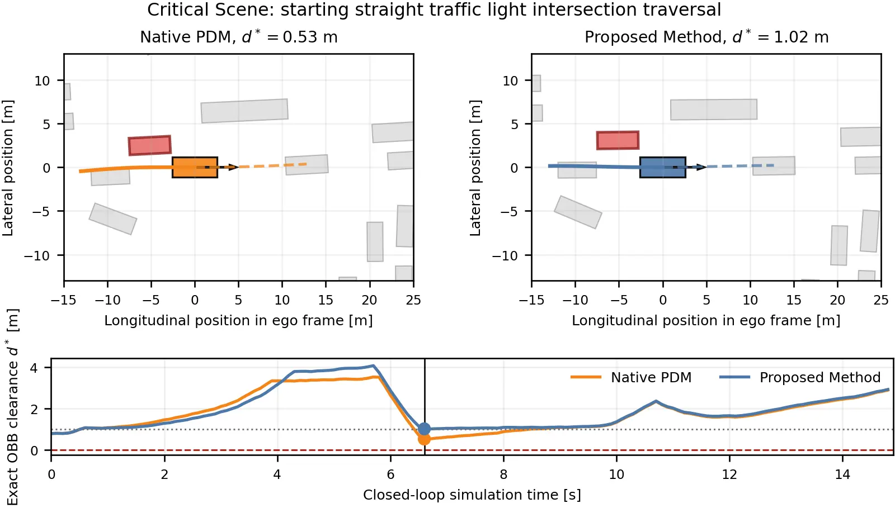
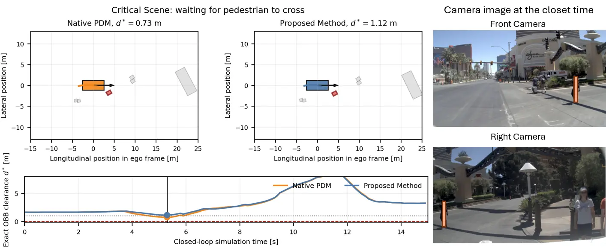
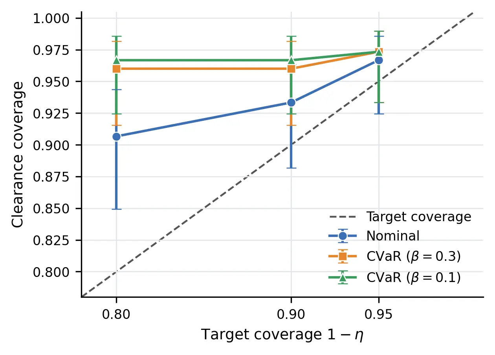
EXPERIMENTAL PLATFORM
Connecting methods with vehicle behavior
The vehicle evaluation integrates onboard sensing, nominal trajectory tracking, and safety intervention. Three MPC-based architectures were compared in controlled tests involving static obstacles, sudden pedestrian interaction, and overtaking. The demonstrations on the homepage show the collaborative experimental work with Vishnu Renganathan and Qadeer Ahmed.
Complementary simulation studies support repeatable comparisons across cooperative driving scenarios and uncertain vehicle–pedestrian interactions. Trajectory certification uses separate conformal-calibration and held-out evaluation sessions in nuPlan.
MY RESEARCH FOCUS
Control, implementation, and safety evaluation
My work connects CBF-based collision avoidance, uncertainty-aware safety filtering, and trajectory safety assessment. Across these studies, the emphasis is on translating safety formulations into implemented systems and evaluating their behavior through simulation, collaborative vehicle experiments, and statistical validation.
This page presents collaborative research outcomes. Publication links provide authorship and technical details for each study.
Supported by the CARMEN+ University Transportation Center, sponsored by the U.S. Department of Transportation under Grant No. 69A3552348327. The views presented are those of the authors and do not necessarily represent the official views of the U.S. Department of Transportation.